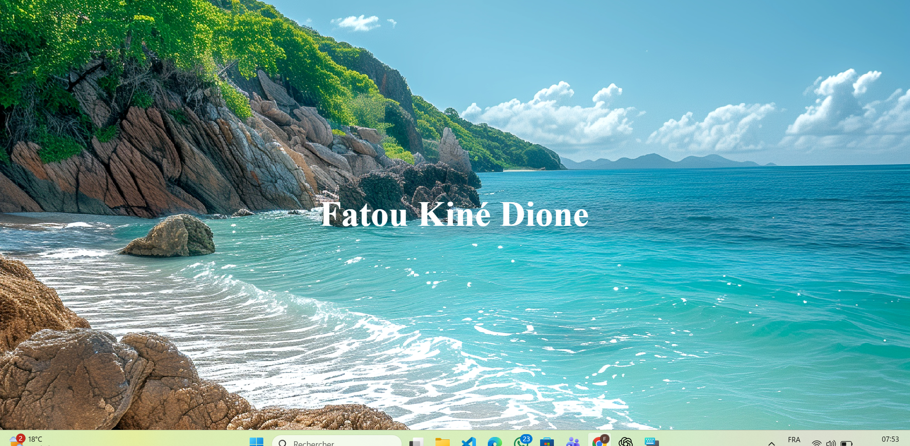

Application 15

Dans ce projet, j’ai créé une page d’accueil affichant mon nom complet sur un arrière-plan représentant un paysage naturel. L’objectif était de pratiquer l’utilisation des images en background et de centrer correctement le texte. Ce projet m’a permis de mieux comprendre la gestion des backgrounds en CSS et la mise en forme des titres.